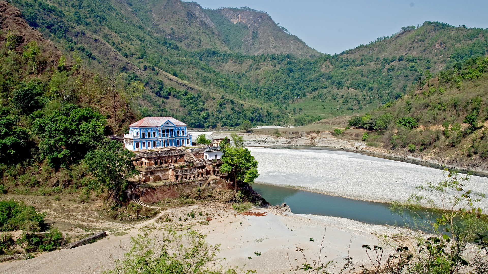
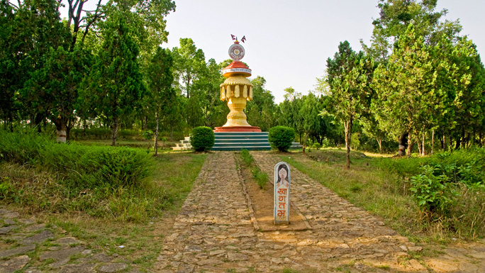
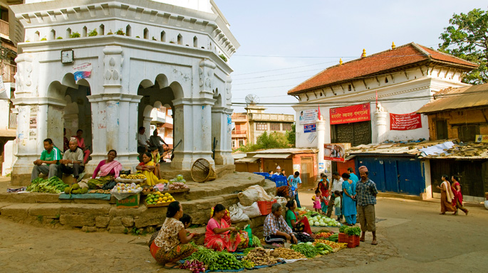
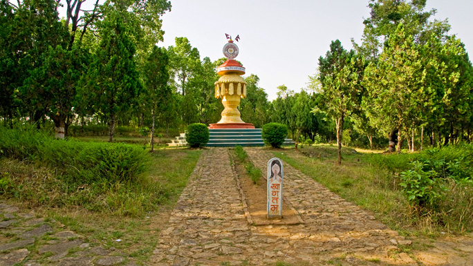
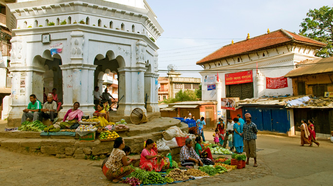

PALPA
Get charmed by "off-the-beaten-track" destination Palpa.
Get charmed by one of the "off-the-beaten-track" destinations in Nepal, the ancient hill town of Tansen. Walk its cobbled bazaar to find a perfect Dhaka topi for yourself. Traverse around Shreenagar Hills, do a day hike to the Rani Mahal on the banks of the Kali Gandaki River or go backpacking along the river trail to find enchanting new routes.
Midway between the Indian border and Pokhara, Tansen's old artistic Newari houses, and cobbled streets, are waiting to be discovered. Palpa was the seat of the Sen kingdom that ruled over this region from 16th century for almost 300 years.
 A picturesque hill town lying on the lap of the Shreenagar Hills, Tansen is the headquarters of Palpa district and the hub of the mid west culture of Nepal. The district varies from 250 to 2,000 m in elevation.
The town has houses strongly influenced by traditional Newari architecture. The name "Tansen" has its origin in the Magar language, meaning "northern settlement." Palpa with its diverse culture and religion falls in the twelve Magar regions of West Nepal.
 Tansen can be visited at any time of the year. While the climate of Palpa varies from tropical to moderate, Tansen is moderate to warm with temperatures between 28 degree Celsius maximum during summer and 8 degree Celsius minimum in the winter. The months of June and July have maximum rain.
Midway between the Indian border and Pokhara, Tansen's old artistic Newari houses, and cobbled streets, are waiting to be discovered. Palpa was the seat of the Sen kingdom that ruled over this region from 16th century for almost 300 years.
 A picturesque hill town lying on the lap of the Shreenagar Hills, Tansen is the headquarters of Palpa district and the hub of the mid west culture of Nepal. The district varies from 250 to 2,000 m in elevation.
The town has houses strongly influenced by traditional Newari architecture. The name "Tansen" has its origin in the Magar language, meaning "northern settlement." Palpa with its diverse culture and religion falls in the twelve Magar regions of West Nepal.
 Tansen can be visited at any time of the year. While the climate of Palpa varies from tropical to moderate, Tansen is moderate to warm with temperatures between 28 degree Celsius maximum during summer and 8 degree Celsius minimum in the winter. The months of June and July have maximum rain.